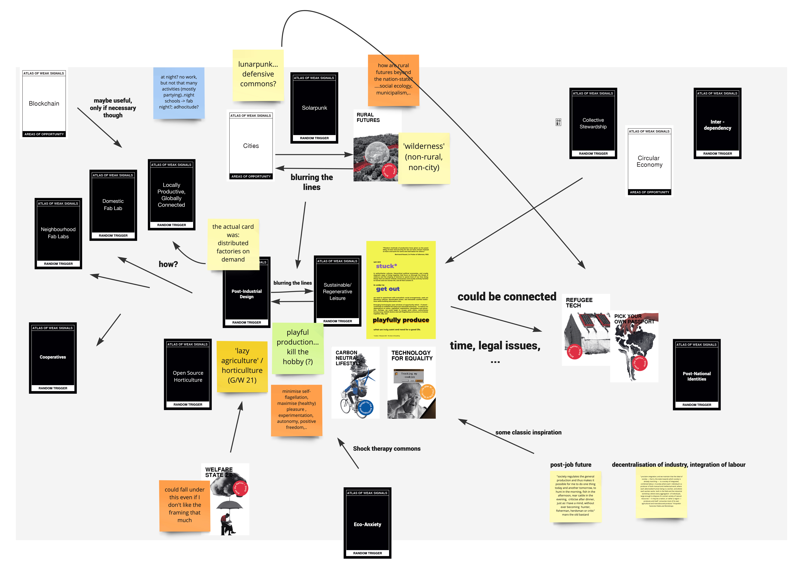

Atlas of Weak Signals¶
my first design space [17 oct 22]¶
the board / mindmap¶
After the winter of introductions came the spring of exploring design spaces, even if everything actually happened in a fall that felt like summer to me.
This is the first version of my ‘design space’ (right-click & open in new tab to be able to zoom) : 
explanation (main weak signals, why I choose them, what opportunities they may offer)¶
We started out exploring the Atlas of Weak Signals cards as a way of building a first ‘prototype’ of our design space (which takes the form of a Miro board). At first, I found this exercise very difficult. I loved all of the categories (after the nation state, design for the Anthropocene, killing hetero-patriarchy, life after AI, life in the times of Surveillance Capitalism). They seemed to capture a significant amount of the issues I believe are most important in our time (with, obviously a focus on technological aspects). Many of the possible technological developments and opportunities hinted at in the cards seemed to be promising. I wanted to select way too many of the cards.
To get out of the paralysis of choice, I went back to the ‘my fight’ poster, which can be seen near the center of the board (in yellow, with text about being ‘stuck*’). Even though when I originally designed it, I had no intention or expectation of using it further, it proved to be valuable for this new task. The advantage it has is that I chose an issue which I feel affects me directly (despite living a comparitively privileged life).
The central theme of the poster is the idea that work (as we know it) is an imposition that not only corrodes the joy of life by stealing the time we have but also tends to involve obligations to do things that are actively harmful for human and non-human life on earth. The proposed or imagined alternative is ‘playful production’, where there are no hobbies and no jobs, and instead people collaborate to produce thing they truly want and need in a playful (and perhaps lazy) manner. It would also be interesting to explore the topics of AI replacing certain kinds of work, as well as the issue of care work in this context (which I am now realising more clearly). The two cards at the center of the design space represent the blurring of the lines between production (‘distributed factories on demand’) and leisure (‘regenerative leisure’) playful production would entail. This brings two further dimensions or clarifications into the picture: distributed design as a potential way of achieving a situation where more prodcution is done playfully, and regeneration, which can include a whole range of issues but puts some emphasis on responses to the climate crisis (which I believe to be perhaps the most pressing of the many intertwined crises we are facing in this century).
Just above this pair of cards, I have placed Solarpunk and both Cities and Rural Futures as weak signals and/or opportunity spaces. The Solarpunk card (together with ‘domestic productive spaces’) were the random example cards Mariana showed us at the beginning of the AoWS card exercise. I was very enthusiastic when I saw those, because they fit so well with my vision of a better future. The internet aesthetic of Solarpunk has become a way to envision potential positive outcomes that involve the use of technology to satisfy human needs and authentic desires in a way which limits - or perhaps even reverses - the destruction of ecosystems and terrain. It also carries a strong heritage of DIY ethics and anti-authoritarian politics (as the ‘punk’ suffix should make obvious), as well as anti-capitalist, anti-racist, anti-colonial, feminist, etc struggles. I find it interesting as a way to point to the importance of culture in shaping futures as well. For me, the blurring of lines between rural areas, so-called wilderness and cities chimes with solarpunk because the ways of living together that such a future would involve likely would ‘rewild’ large areas, as well as making rural areas more city-like in some regards and cities more involved in food production (so perhaps more rural).
Lunarpunk -to me- is solarpunk’s more cynical, individualist and ‘realist’ cousin. I have since learned that it is also a kind of more ‘gothy’ aesthetic (which is not that related to what I have in mind, though perhaps a bit). It involves taking a hard look at the dangers projects that try to build Commons in a solarpunk fashion might face from economically interested actors, nation-states, reactionary non-state actors, etc. It might also involve a more ‘mutualist’ as compared to solarpunk’s ‘commons’-oriented view, where enlightened self-interest could play a more important role. I would find it interesting to explore those strands of thought as perhaps being two sides of the same coin. Some of the theoretical influences on these ideas are represented on the bottom right of the board.
Moving on to the more concrete area (towards the left of the board) - where I collected cards that seemed to point to more concrete starting points for exploring distributed design for playful production and sketched ideas for it - thinking about lunarpunk and the importance of education in distributed design made me think about the model of the night school, and how many people who might benefit from playful production may have time then. It also seems strange to me (and this is perhaps a more personal approach, as a night person) that there are so few workshops and other events of that nature at night. Perhaps some bars could become distributed places of playful production for regenerative leisure on weekdays, where they often remain relatively empty?
The connection between ‘lazy agriculture’ (also towards the left side of the board) for which The Dawn of Everything was my inspiration, and distributed manufacturing was somehow present in my mind but pointed out to me in my first design review session (with Jonathan). That is one of the main areas I will explore next (as I explore reference projects and search for a ‘small-scale’ practical foray into these zoomed out ideas’).
(Sorry for the long text.)